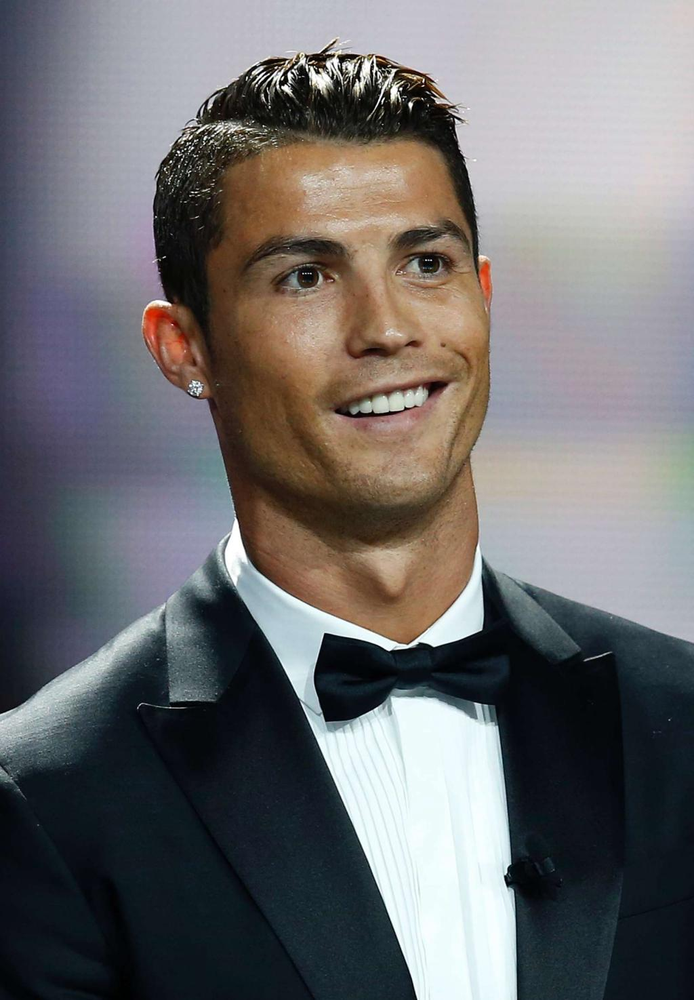
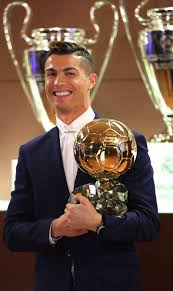

SOME ACHIEVEMENTS OF THE GREAT CR7(2016)

2016 FIFA Ballon d'Or
UEFA Best Player
The Best FIFA Men’s Player
UEFA Champions League Top Scorer
Trofeo Alfredo Di Stefano
Best International Athlete ESPY
MY HERO CR7
Donates blood regularly
hels needy people
donates a lot of money to charity
his biggest achievement
Ballon d'Or

REFERENCE
achievements
-
click here
cr7 pic
-
click here
ballindore pic
-
click here
thanks a lot for viewing this page